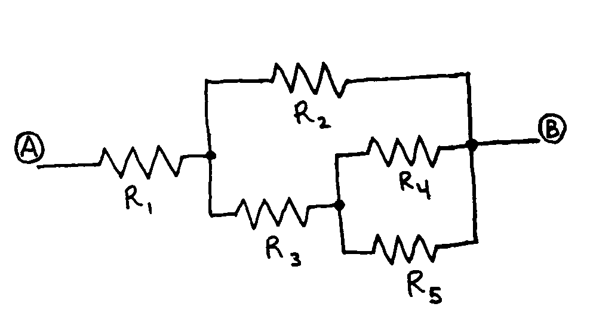
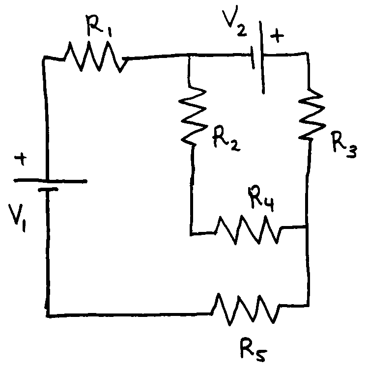

Phy112 Lab 1.3 - Current and Resistance
Table of Contents
This lab will introduce the basic building blocks of circuit building and require the use of a breadboard to create your desired circuit. First you will create a a basic circuit and make some measurements using a multimeter. Then you will use multiple resistors in series and parallel to create a more complicated circuit topology. Finally you will verify your measured results using Kirchoff’s junction and loop rules.
1. The Multimeter
The multimeter is one of the most important devices in electronics. Electricity is normally invisible. This single device will measure multiple electric properties: Voltage [V], Current [A], resistance [\(\Omega\)], capacitance [F], temperature [C] etc, and allow you to be safe around electricity. The device is designed to be robust and durable for use in field measurements of many stationary analog signals.
The wires of a multimeter are named probes. There are multiple ports at the bottom of the device where you can plug probes in, but be cautious about which port you use!
- COM is used to return the electrons back to the device (ground),
- V is safe for the device (high impedance), all measurements use this port except for current.
- 10A is used for current measurements (low impedance, can blow the fuse)
Multimeters can be damaged when using the 10A port. This port is ONLY used when measuring current! All other measurements use the high impedance port (V). The measurement of current requires a low resistance path to let the electrons flow. This port is essentially an open circuit (tiny resistance between it and ground), and you can easily damage circuitry with an open circuit.
A breadboard is a quick way to prototype a circuit. It consists of rows of holes which you can insert wire ends and power-rails on the outside to supply voltage.
The holes are not all connected. Hold the breadboard upright
while holding the board horizontally, there are two rows on the very top and very bottom which are connected (power rails). The center has many columns of 5 connected holes, and a gap
Resistors do what their name suggests, resist the flow of electricity. They are abundant in many circuits, and thus the cost of the elements must be minimized. To decrease cost, the labeling on the resistors is encoded in bands of color. Thee is a way to read these bands, but it is not important for this class (ask if you are curious). The best way to find the value of a resistor is to use the multimeter to measure it.
To measure resistance: Hook up the red wire of the multimeter to the Voltage port and the black wire to the COM port, and turn the knob on the multimeter to resistance \(\Omega\). Push the point of the probe down into the breadboard next to the wire you wish to measure, or make a connection with a clip.
1.1. Measure the resistor values
Take care to read the units. The multiplier will change on the screen from \(\Omega\), \(k\Omega\), \(M\Omega\).
\(R_1 = \_\_\_\_\_\_\_\_\_\_\_\)
\(R_2 = \_\_\_\_\_\_\_\_\_\_\_\)
\(R_3 = \_\_\_\_\_\_\_\_\_\_\_\)
\(R_4 = \_\_\_\_\_\_\_\_\_\_\_\)
\(R_5 = \_\_\_\_\_\_\_\_\_\_\_\)
Checkpoint:
- All five resistors should be of similar magnitude (ex: 1k, 1k, 2k, 5k, 5k).
- You should have at least 3 unique values of resistor in your set.
2. Create two simple circuits
create a series circuit with any two of your above resistors. Series connections require the electrons to flow into R1 and then also forced to flow into R2.
2.1. Series
\[R_{series} = R_1 + R_2\]
\(R_{series} = \_\_\_\_\_\_\_\_\_\_\_\)
create a parallel circuit with any two of your above resistors. Parallel connections require the electrons to encounter a junction in the circuit and the electrons will have a choice to go left or go right. In the simplest physical setup, the resistors will look stacked on top of each other.
2.2. Parallel
\[\frac{1}{R_{parallel}} = \frac{1}{R_1} + \frac{1}{R_2}\]
\(R_{parallel} = \_\_\_\_\_\_\_\_\_\_\_\)
Checkpoint:
- Verify that your measurements match the theory.
3. Create a complicated circuit
Use all five resistors to create the following circuit on your breadboard.

Set up the circuit and measure the resistance between points A and B:
Measured \(R_{eq} = \_\_\_\_\_\_\_\_\_\_\_\)
Use equivalent resistor techniques to find the value of this resistor network in theory. Recall the simplification formulae for resistors:
\[R_{series} = R_1 + R_2 \qquad \qquad \frac{1}{R_{parallel}} = \frac{1}{R_1} + \frac{1}{R_2}\]
Calculated \(R_{eq} = \_\_\_\_\_\_\_\_\_\_\_\)
Checkpoint:
- Create a sketch of each intermediate simplified circuit.
- Make sure the measured and calculated values match. Try to remake the circuit and review the math if they are different.
4. Kirchoffs rules to find current
If the device has multiple interconnected branches (almost always the case for real circuits), a common technique is to use the conservation of charge (junction) and conservation of energy (loop) to create equations which model the circuit. These are known as Kirchoffs rules.

For simplicity, you can use a battery for each voltage source (measure the voltage, but you should find ~1.5V for a standard battery). You may also use a bench power supply if you prefer to use unique voltages.
Practice the steps of Kirchoffs rules:
- label each junction with a dot (two junctions, duplicate)
- label each branch with a unique current (three branches)
- draw a loop for each section of the circuit (two loops)
The loop and junction rules will then create a system of equations to solve to find the current flow in each branch of the circuit. Practice writing out these rules (1 junction and 2 loop equations) to solve for the unknown currents (3 currents).
- Loop rule: sum of the input currents is equal to the sum of the output currents.
- Junction rule: a complete loop will have no voltage change. Current in same direction as loop is a voltage drop (downhill). Current in the opposite direction as loop is a voltage gain (uphill).
4.1. Calculated currents:
Finally, solve for the three currents:
\(I_{1} = \_\_\_\_\_\_\_\_\_\_\_\)
\(I_{2} = \_\_\_\_\_\_\_\_\_\_\_\)
\(I_{3} = \_\_\_\_\_\_\_\_\_\_\_\)
Checkpoint:
- Label currents, junctions and loops for the above circuit
- Write out Kirchoffs equations (3 total) and verify they are correct with the instructor
- Solve for the 3 unique currents (in mA)
5. Create the circuit and measure the current
Create the full circuit as shown above. Current measurements should only be made after the circuit is fully connected.
You must break the circuit to measure the current. Figure out which branch you wish to measure and unplug a resistor at that point. Then reconfigure your multimeter to measure current. Use the multimeter as a wire to reconnect the break you made.
5.1. Measured currents:
Break the circuit in each branch and measure the current with the multimeter:
\(I_{1} = \_\_\_\_\_\_\_\_\_\_\_\)
\(I_{2} = \_\_\_\_\_\_\_\_\_\_\_\)
\(I_{3} = \_\_\_\_\_\_\_\_\_\_\_\)